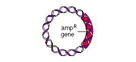

|
Plasmids
Plasmids are circular pieces of DNA that exist outside the main bacterial chromosome and carry their own genes for specialized functions. In genetic engineering, plasmids are one means used to introduce foreign genes into a bacterial cell. To understand how this might work, consider the plasmid below.

Some plasmids have the ampR gene, which confers resistance to the antibiotic ampicillin. E. coli cells containing this plasmid, termed "+ampR" cells, can survive and form colonies on LB agar that has been supplemented with ampicillin. In contrast, cells lacking the ampR plasmid, termed "–ampR" cells, are sensitive to the antibiotic, which kills them. An ampicillin-sensitive cell (–ampR) can be transformed to an ampicillin-resistant (+ampR) cell by its uptake of a foreign plasmid containing the ampR gene.
To transform cells, you first need to make them competent to take up extracellular DNA.
 Continue to Competent Cells. Continue to Competent Cells.
|